3.1 内存管理概念
存储器是计算机中仅次于 CPU 的重要资源，程序必须先装入内存才能被执行。在多道程序并发运行的今天，如何把有限的物理内存管理好，直接决定了系统的利用率和可靠性。学习本节前，请先带着两个问题：
- 为什么要进行内存管理？
- 多级页表解决了什么问题？又会带来什么新问题？
本节内容层层递进：每一种新的管理方式，通常都是为了克服前一种方式的不足而提出的。建议按「它解决了什么痛点 → 付出了什么代价」这条主线去比较各类方法，并着重掌握页式管理——它是后续虚拟内存（3.2 节）的基础。
3.1.1 内存管理的基本原理和要求
内存管理（Memory Management）是指操作系统对内存空间的组织、分配、回收以及地址映射等一系列操作。即便现代计算机主存容量不断增长，仍不可能同时容纳所有进程的程序和数据，因此操作系统必须对有限的物理内存进行合理划分，并实施高效的动态分配策略。
1. 内存管理的主要功能
- 内存空间的分配与回收：实时跟踪内存使用状态、记录空闲区域，为新进程分配所需空间，并在进程终止后及时回收其占用的内存。
- 地址转换：用户程序使用的是逻辑地址（也称虚拟地址），而访存必须使用物理地址，操作系统需提供机制把逻辑地址动态转换为物理地址。
- 内存空间的扩充：借助虚拟存储技术（3.2 节），让进程可以使用远大于物理内存容量的地址空间，在逻辑上扩充内存。
- 内存共享：允许多个进程安全地访问同一块物理内存区域，常见于共享库和进程间通信。
- 存储保护：确保各进程只能访问自己被授权的内存区域，防止进程间相互干扰或破坏操作系统。
2. 程序的链接与装入
创建进程时，需要先把程序和数据装入内存。将用户源程序变成可在内存中执行的程序，要经过三步：
- 编译：编译程序把用户源代码翻译成若干目标模块；
- 链接：链接程序把各目标模块及所需的库函数合并成一个完整的装入模块；
- 装入（加载）：装入程序把装入模块载入内存并启动执行。
3. 逻辑地址与物理地址
编译后的每个目标模块都从 0 号单元开始编址，这种地址称为该模块的相对地址（逻辑地址）。链接程序把多个目标模块拼接成一个统一的、从 0 开始编址的逻辑地址空间（虚拟地址空间）。以 32 位系统为例，逻辑地址空间的范围是 \(0 \sim 2^{32}-1\)。进程运行时使用的都是逻辑地址，用户程序只需关心逻辑地址，底层的转换机制对它完全透明；不同进程可以拥有相同的逻辑地址，因为它们各自拥有独立的逻辑地址空间，最终会被映射到主存的不同位置。
物理地址空间是主存中所有物理存储单元的集合，是地址转换的最终目标。程序装入内存时把逻辑地址变为物理地址的过程称为地址重定位；在现代支持虚拟内存的系统中，这一转换由内存管理单元（MMU）在硬件层面于运行时自动完成——操作系统为每个进程维护一张页表，MMU 依据当前进程的页表把逻辑地址动态转换为物理地址，整个过程对用户程序透明。
4. 程序的链接
按链接发生的时机不同，有三种链接方式：
- 静态链接：在程序运行之前，把各目标模块及所需库函数链接成一个完整的装入模块，此后不再拆开。链接时要完成两项关键工作：①地址调整——各模块编译后都从 0 编址，合并后需按其在装入模块中的实际位置统一加上偏移量（例如模块 A 长度为 L，模块 B 紧随其后，则 B 内部所有地址都要加 L）；②外部符号解析——把模块间的外部调用符号（如 CALL B 中的 B）替换为确定的目标地址。
- 装入时动态链接：装入内存时边装入边链接，遇到对外部模块的调用就立即查找、装入该模块并替换外部符号。优点：①便于修改更新——各目标模块独立存放，改动某个模块无须重新生成整个装入模块；②便于共享——同一个目标模块可以链接到多个应用程序中，而静态链接方式下每个程序都包含一份完整副本，无法共享。
- 运行时动态链接：程序执行过程中，只有真正用到某个尚未装入的模块时才装入并链接它；用不到的模块既不装入也不链接。优点是既能加快装入过程，又能节省内存空间。
5. 程序的装入
- 绝对装入：仅适用于单道程序环境。内存中只有一道程序，其驻留位置在编译前就能确定，编译程序可直接生成使用绝对地址的目标代码，装入时地址无须任何修改，逻辑地址与物理地址完全一致。这种方式缺乏灵活性。
- 可重定位装入：多道程序环境下，编译时无法预知程序在内存中的位置，装入模块从 0 开始编址。装入时根据内存当前空闲情况，为模块分配一块连续区域，并一次性把所有逻辑地址修改为物理地址。这种地址转换在装入时一次完成、运行期间不再改变，故称静态重定位。限制：进程必须在装入前一次性获得全部内存空间，装入后不能移动位置，也不能在运行期间动态申请内存。
- 动态运行时装入：装入模块载入内存后不立即转换地址，把转换推迟到指令真正执行时进行。系统借助重定位寄存器存放程序在内存中的起始物理地址，程序中保留的仍是逻辑地址，实际物理地址 = 逻辑地址 + 重定位寄存器的值，由硬件在运行时动态计算。
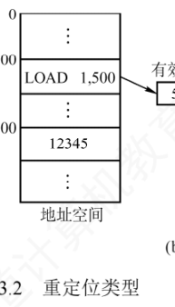
动态重定位的优点：支持程序在内存中移动，便于操作系统进行紧凑（拼凑），从而有效减少外部碎片；也提高了内存分配的灵活性，允许在运行期间动态调整进程的内存布局。
6. 内存保护
内存保护要保证各进程在自己的内存空间内运行：既不能破坏操作系统，也不能干扰其他进程。常用的硬件方法有两种：
- 在 CPU 中设置一对上、下限寄存器，分别存放进程在内存中的上限和下限地址，CPU 每访问一个地址都自动与这两个值比较，判断是否越界；
- 采用重定位寄存器（也称基地址寄存器）和界地址寄存器（也称限长寄存器）：前者存放进程在内存中的起始物理地址，后者存放进程地址空间的长度（最大逻辑地址）。访存时先比较逻辑地址与界地址寄存器的值，未越界再加上重定位寄存器的值得到物理地址。
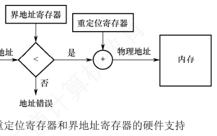
7. 内存共享
只有只读的区域才能被安全共享。可重入代码（纯代码）是允许多个进程同时访问、但不允许任何进程修改的代码；每个进程在运行时还需配备私有的数据区，程序只写自己的私有数据区，共享代码段始终保持不变。
看一个经典算例：一个可容纳 40 个用户的多用户系统，所有用户同时运行同一个文本编辑器，程序含 160KB 代码区和 40KB 数据区：
不共享代码：每个用户各留一份副本
(160KB + 40KB) × 40 = 8000KB
共享代码（分页或分段系统都只保留一份代码副本）：
160KB + 40KB × 40 = 1760KB共享的实现粒度与页/段的组织方式有关：分页系统中（页面 4KB），160KB 代码区占 40 个页面，每个进程的页表都要设置 40 个页表项指向同一组共享代码页的物理页框，另有 10 个页表项指向各自的私有数据页；分段系统中则只需为共享代码段设置一个段表项（记录该段起始地址和段长 160KB）。可见页式、段式都能支持共享，区别在于共享的粒度和管理机制。
8. 内存分配与回收方式的演进
随着系统从单道向多道发展，内存分配方式不断演进：单一连续分配 → 固定分区分配（难以适应作业大小变化）→ 动态分区分配（产生外部碎片）→ 离散分配方式（页式管理，提高利用率）；为满足程序逻辑结构、段级共享与保护等用户需求，又出现了分段存储管理。这条演进线正是后面几小节的展开顺序。
3.1.2 连续分配管理方式
连续分配方式指为用户程序分配一个连续的内存空间：程序需要 100MB，系统就分配一块连续的 100MB 区域。主要包括单一连续分配、固定分区分配和动态分区分配三种。
1. 单一连续分配
内存被划分为系统区（仅供操作系统使用，通常在低地址部分）和用户区（只允许一道用户程序独占）。优点：结构简单、无外部碎片、无须内存保护机制（内存中始终只有一道程序）。缺点：仅适用于单用户单任务系统，存在内部碎片（程序装不满用户区时，剩余部分闲置），内存利用率极低。
2. 固定分区分配
固定分区分配是最简单的多道程序存储管理方式：把用户区划分为若干大小固定的分区，每个分区只装一道作业。划分分区有两种做法：
- 分区大小相等：缺乏灵活性——程序太小浪费空间，太大装不进去；
- 分区大小不等：配置多个小分区、适量中等分区和少量大分区，适应性好。
系统维护一张分区使用表（常按分区大小排序），每个表项记录分区的始址、大小和状态（是否已分配）。分配时检索该表，找到一个满足作业大小且未分配的分区，把状态改为「已分配」；找不到合适分区就拒绝分配。回收时把对应表项状态改回「未分配」即可。
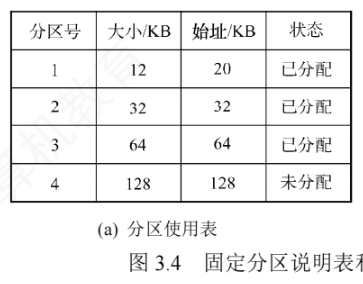
固定分区的问题：①作业大于所有分区时无法装入；②作业小于分区时仍独占整个分区，分区内部未被利用的部分形成内部碎片。它无外部碎片，但每个分区只能由一道作业独占，内存利用率较低。
3. 动态分区分配
（1）基本原理与回收
动态分区分配也称可变分区分配：进程装入时按其实际需求，分配一块大小恰好匹配的连续内存。分区的大小和数目随进程的装入与释放动态变化。
看教材的例子：系统 64MB 内存，低 8MB 固定给操作系统，其余 56MB 为用户区。初始装入进程1（20MB）、进程2（14MB）、进程3（18MB）后仅剩 4MB 空闲，装不下进程4。于是换出进程2、换入只需 8MB 的进程4，腾出 6MB 空闲块；之后要重新换入进程2（14MB）时剩余空间仍不够，只好再换出进程1、换入进程2。可见系统运行一段时间后，内存中会积累大量分散的小空闲块——总量够用却无法满足较大进程——这就是外部碎片，与固定分区「分区内没用完」的内部碎片形成对比。
系统用一张按起始地址排序的空闲分区链（表）管理空闲分区。分配时检索链表找到满足请求的分区，若其大于所需，则切出请求大小的空间分配，剩余部分（不小于最小分配单位时）留在链中。回收时按回收区的始址找插入位置，并根据相邻情况合并，共四种情形：
- 回收区与前一个（上邻）空闲分区相邻：两者合并，更新前一分区的大小；
- 回收区与后一个（下邻）空闲分区相邻：两者合并，更新后一分区的始址和大小；
- 回收区与前后两个空闲分区都相邻：三者合并，更新前一分区的大小，并删去后一分区的表项（空闲分区数减 1）；
- 回收区不与任何空闲分区相邻：为它新建表项，记录始址和大小后插入链中。
（2）基于顺序搜索的分配算法
四种算法都通过依次遍历空闲分区链来找一个合适的分区，区别在于空闲链的排列规则和查找起点：
| 算法 | 空闲分区排列 / 查找方式 | 优点 | 缺点 |
|---|---|---|---|
| 首次适应（First Fit） | 按地址递增排列；每次从链首开始，找到第一个满足请求的分区就切分分配 | 优先使用低地址分区，保留高地址的大空闲区，利于大作业装入；回收时不必重新排序；查找简单高效 | 低地址端易积累小碎片；每次都从链首查起，开销略大 |
| 邻近适应（Next Fit，循环首次适应） | 排列同首次适应；从上次查找结束的位置继续循环查找 | 减少对低地址部分的重复扫描，查找分布更均匀 | 大空闲区被逐渐切分、分布不均，难以支持后续大作业，整体性能通常不如首次适应 |
| 最佳适应（Best Fit） | 按容量递增排列；找到第一个能满足请求的分区（即可用分区中最小的） | 总能用最小的可用分区满足请求，尽量保留大空闲区 | 每次分配都会留下极小的剩余块，日积月累产生大量外部碎片，性能通常很差；回收时还需重新排序 |
| 最坏适应（Worst Fit） | 按容量递减排列；取第一个分区（即可用分区中最大的）切分 | 切最大的块，剩下的碎片通常仍可用，减少小碎片 | 很快耗尽大分区，系统难以满足大作业需求，性能同样不佳 |
综合来看，首次适应算法在查找开销、碎片控制和大作业支持之间平衡最好：不仅查找简单，而且回收分区时无须改动链的地址序，高地址大空闲区也得以保留，是实践中综合性能最优的选择。
（3）基于索引搜索的分配算法 课外拓展
大中型系统中空闲分区链可能很长，顺序搜索效率低，可按空闲分区大小分类，为每一类建立独立链表并用一张索引表统一管理；分配时按请求大小在索引表中定位链表，直接取用。常见三种：
- 快速适应（Quick Fit）算法：按进程常用空间大小预先把空闲分区分成若干固定尺寸类别。分配分两步：①在索引表中找到能容纳作业的最小类别链表；②取该链表第一个空闲分区。优点是查找高效、不产生碎片；缺点是回收时难以合并分区，算法复杂、开销大。
- 伙伴系统（Buddy System）：规定所有分区大小都是 \(2^k\)（k 为正整数）。分配 n 大小的内存时（满足 \(2^{i-1} < n \le 2^i\)），先查大小为 \(2^i\) 的空闲链，没有就依次查 \(2^{i+1}, 2^{i+2}, \dots\) 的链，找到后不断二分，直到得到所需大小的块，其余半块挂到对应大小的空闲链上。每个大小为 \(2^i\) 的分区都有唯一的伙伴——与它大小相同、地址相邻（首尾相接）的分区。回收时若其伙伴也空闲，则合并成 \(2^{i+1}\) 的分区，并继续向上尝试合并，直到不能合并为止。
- 哈希算法：以空闲分区大小为关键字建立哈希表，表项记录同类空闲分区链的头指针；分配时按所需大小哈希定位，直接取得对应空闲链。
4. 连续分配的通病与离散分配的引入
三种连续分配方式的共同特点是程序必须整体连续存放。哪怕系统还有 1GB 以上的空闲内存，只要不存在连续的 1GB，需要 1GB 的作业就无法装入——这正是外部碎片（或分区约束）所致。为此引入非连续分配：把进程的地址空间切成多个单元，允许它们分散装入内存中互不相邻的区域。这样能充分利用零散空间、显著提高利用率，代价是必须额外维护「逻辑单元 ↔ 物理位置」的映射关系。按单元大小是否固定，分为分页存储管理（固定）与分段存储管理（不固定）；若运行前必须一次性全部装入，称基本分页 / 基本分段；若支持按需调入，则称请求分页 / 请求分段（虚拟内存，见 3.2 节）。
3.1.3 基本分页存储管理
固定分区有内部碎片、动态分区有外部碎片，内存利用率都不高。分页存储管理从「彻底消除外部碎片」出发：把物理内存划分成若干大小相等的固定单元，称为页框（页帧、物理块）；把进程的逻辑地址空间也划分成与页框同样大小的单元，称为页面（页）。系统以页框为单位为进程分配内存。
从形式上看分页像「等长的固定分区」，但本质不同：分页把进程和内存都切成固定大小的单元、以页为单位分配，因此不会产生外部碎片；不过页面大小固定，进程最后一页往往装不满页框，页框里剩下的空间形成页内碎片（内部碎片），每个进程平均产生约半页的页内碎片。
1. 页面和页面大小
每个页面有编号（页号，从 0 开始），每个页框也有编号（页框号 / 物理块号，同样从 0 开始）；建立页号到页框号的映射，就完成了进程各页到物理内存的分配。为便于地址转换，页面大小通常取 2 的整数次幂。页面大小要适中：
- 页面太小：页面数量增多 → 页表过长，既占内存又增加地址转换开销，页面换入换出效率也降低；
- 页面太大：页内碎片增多，内存利用率下降。
2. 地址结构
分页系统的逻辑地址由两部分组成：页号 P 和页内偏移量 W。以 32 位地址、页面大小 \(2^{12}\,\text{B}\)（4KB）为例，地址结构如下：
| 31 ～ 12 位（高 20 位） | 11 ～ 0 位（低 12 位） |
|---|---|
| 页号 P | 页内偏移量 W |
因为 4KB \(= 2^{12}\) B，页内偏移量占低 12 位（0～11 位）；高 20 位（12～31 位）是页号，最多可支持 \(2^{20}\) 个页面。反过来推也一样：页号占 20 位 → 页面数 \(2^{20}\) 个；偏移占 12 位 → 页面大小 4KB。这种「地址结构决定一切」的换算是统考最基础也最常见的考法。
3. 页表
为实现页号到页框号的映射，系统为每个进程建立一张页表（Page Table）。页表是一个按页号顺序排列的数组，每个页表项记录对应页面驻留的物理页框号（还可含有效位、访问位等状态信息）。进程执行时按页号索引页表，即可得到该页所在的物理块号。
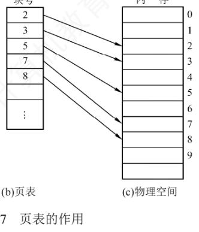
4. 基本地址变换机构 必考重点
地址变换机构的任务是把逻辑地址 A 转换为物理地址 E，整个过程借助页表完成。系统设一个页表寄存器（PTR），存放页表在内存中的始址 F 和页表长度 M（页表项个数）。寄存器昂贵，单 CPU 系统通常只设一个 PTR：进程未执行时，其页表始址和长度保存在该进程的 PCB 中；进程被调度上 CPU 时才装入 PTR。
设页面大小为 L，逻辑地址 A 到物理地址 E 的变换过程分四步：
- 计算页号与页内偏移：\(P = \lfloor A / L \rfloor\)，\(W = A \bmod L\)；
- 越界检查：若 \(P \ge M\)（页号超过页表长度），产生越界中断；否则继续；
- 查页表（第 1 次访存）：页表项地址 \(= F + P \times\) 页表项长度，从中取出该页的物理块号 b；
- 拼接物理地址：\(E = b \times L + W\)（页面在内存中的始址 = 块号 × 块大小，再加页内偏移），按 E 访问内存（第 2 次访存）。
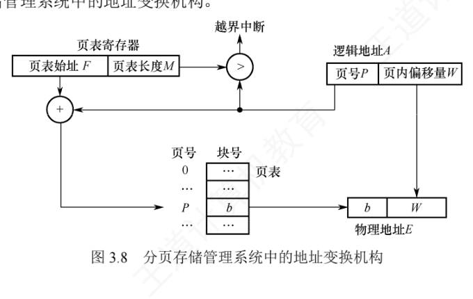
例题（保留教材数值）：页面大小 L = 1KB，页号 2 对应的物理块号 b = 8，求逻辑地址 A = 2500 的物理地址：
① 页号 P = 2500 / 1K = 2 （2500B 落在第 2 页）
② 页内偏移 W = 2500 % 1K = 452 （页内第 452B，1KB = 1024B）
③ 查页表得块号 b = 8 （第 2 页存放在 8 号物理块）
④ 物理地址 E = b × L + W
= 8 × 1024B + 452B
= 8192B + 452B = 8644B上述过程由 MMU 硬件自动完成。若逻辑地址以二进制给出，页号和页内偏移可以直接通过截取高位和低位获得，比除法/取余更高效。也正因为页面大小固定，页式逻辑地址是一维的线性地址——一个整数就能确定位置，无须任何附加参数。
页表项的大小也不是随意规定的：页表项必须能表示所有可能的页框号。以 32 位逻辑地址空间、按字节编址、页面大小 4KB 为例：
页框总数 = 2^32 B / 4KB = 2^32 B / 2^12 B = 2^20 个
页框号需要 log2(2^20) = 20 位
页表项至少 = ⌈20 / 8⌉ = 3B
考虑对齐和扩展位（有效位、访问位等），实际系统通常取 4B分页管理面临两个主要挑战：①每次访存都要做地址转换，转换不够快会拖慢系统；②页表本身占内存，页表过大时利用率下降。这两个痛点分别催生了快表（TLB）和多级页表。
5. 具有快表的地址变换机构 必考重点
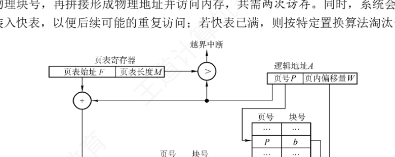
按上面的流程，页表全放在内存时，每次访存（取指令或读写数据）都至少要访存两次：第 1 次查页表取块号，第 2 次按物理地址取内容，性能损失明显。为此，地址变换机构增设一个具有并行查找能力的高速缓冲存储器——快表（TLB），用来缓存当前活跃的若干页表项；相应地，主存中的完整页表称为慢表。
引入快表后的地址变换过程：
- CPU 给出逻辑地址后，硬件自动拆出页号，并与快表中所有页号并行比较；
- 命中：直接从快表取出块号 b，与页内偏移拼接成物理地址——此时只需 1 次访存（访问目标数据）；
- 未命中：访问内存中的页表取出块号（第 1 次访存），拼接后访问数据（第 2 次访存），共 2 次访存；同时把该页表项装入快表，若快表已满，则按特定置换算法淘汰一个旧项。
| 对比项 | 快表命中 | 快表未命中 |
|---|---|---|
| 查 TLB | 并行比较命中，直接得到块号 b（不访存） | 没有匹配页号 |
| 查慢表（内存中的页表） | 不需要 | 需要，取出块号 b（第 1 次访存） |
| 形成物理地址 | E = b × L + W（块号与页内偏移拼接） | |
| 访问目标数据 | 第 1 次访存 | 第 2 次访存 |
| 合计访存次数 | 1 次 | 2 次（并把该项调入快表，满则淘汰） |
6. 两级页表 必考重点
引入分页后，进程的页面无须全部常驻内存，但页表本身必须整个驻留内存（且要求连续）。页表可能非常庞大：以 32 位逻辑地址、页面 4KB、页表项 4B 为例：
页内偏移 = log2(4KB) = log2(2^12 B) = 12 位 → 页号占 20 位
页表项个数最多 = 2^20 个
页表总大小 = 2^20 × 4B = 4MB
占用页框数 = 2^20 × 4B / 4KB = 2^20 × 2^2 B / 2^12 B = 2^10 = 1024 个页
—— 若要求页表连续存放，显然不切实际解决思路是把页表本身也当作可分页的对象，具体做两件事：①对页表采用离散分配，不再要求连续存放，用一张专门的索引表记录各「页表页」在内存中的位置；②只把当前需要的部分页表调入内存，其余驻留外存、按需调入（这正是虚拟内存的思想）。这相当于为已离散化的页表再建一层页表——外层页表（也称页目录）。
仍按上述参数：每个页面能存放 \(4\text{KB} / 4\text{B} = 1024 = 2^{10}\) 个页表项，而页表共 \(2^{20}\) 个页表项，因此需要 \(2^{20} / 2^{10} = 2^{10} = 1024\) 个「页表页」，外层页表恰好 1024 个表项，正好占用 1 页（4KB）。由此得到两级分页的逻辑地址结构：
| 31 ～ 22 位（10 位） | 21 ～ 12 位（10 位） | 11 ～ 0 位（12 位） |
|---|---|---|
| 一级页号（页目录号） | 二级页号（页号） | 页内偏移量 |
外层页表（页目录，共 1 页）
├─ 0 号表项 ───► 页表页 0（存放第 0～1023 号页的块号）
├─ 1 号表项 ───► 页表页 1（存放第 1024～2047 号页的块号）
├─ …… （每个页表页本身也只有 1 页大小）
└─ 1023 号表项 ─► 页表页 1023（存放第 1048575 号页的块号）
外层页表的表项存放「某个页表分页的物理起始地址」；
内层页表的表项存放「进程某页对应的物理块号」。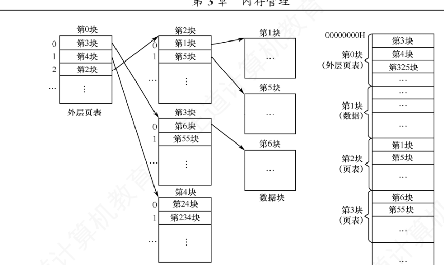
系统增设一个外层页表寄存器（页目录基址寄存器），存放外层页表的起始地址。地址变换过程：
- 用逻辑地址中的页目录号索引外层页表，取出对应页表页的物理起始地址；
- 用二级页号索引该页表页，取出目标页面的物理块号；
- 块号与页内偏移拼接成物理地址，据此访问内存单元。
无快表时，两级页表一次地址变换需 3 次访存（查外层页表、查内层页表、访问数据）；推广到 N 级页表则需 N + 1 次访存。对于更大的地址空间，两级页表远远不够：若逻辑地址 64 位、页面 4KB，页号占 52 位，每页仍放 1024 个页表项的话约需 6 级页表；实际系统通常把虚拟地址限制为 48 位，采用三级或四级页表即可高效管理。
3.1.4 基本分段存储管理
分页是从计算机（系统）的角度设计的，目标是提高内存利用率，对用户透明；分段则是从用户和程序员的角度出发，方便编程、信息保护与共享、动态增长、动态链接等。
1. 分段
分段系统按程序的逻辑结构，把用户进程的地址空间划分为若干大小不等的段（如主程序段、子程序段、数据段、栈段），每段内部从 0 开始编址、占用一片连续地址空间；段与段之间不要求连续。地址由「段号 + 段内偏移」两个参数共同确定，逻辑地址空间呈二维特性。
2. 分段的逻辑地址结构
逻辑地址由段号 S 和段内偏移量 W 组成。教材示例中段号占 16 位、段内偏移量占 16 位：
| 31 ～ 16 位（16 位） | 15 ～ 0 位（16 位） |
|---|---|
| 段号 S | 段内偏移量 W |
此时一个进程最多可有 \(2^{16} = 65536\) 个段，最大段长为 \(2^{16}\,\text{B} = 64\text{KB}\)。
3. 段表
每个进程一张段表，实现逻辑段到物理内存区的映射。每个段对应一个段表项，记录该段的段长 C 和在内存中的基址 b（起始地址）两项信息。
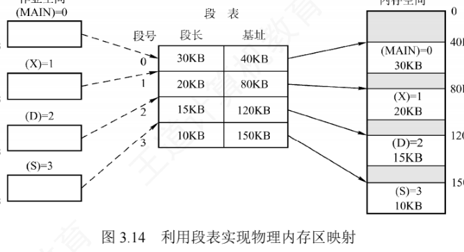
段表项同样连续存放且长度相同，段号作为隐含索引，无须存储。段表项大小的推算：某 32 位分段系统，段号 16 位、段内偏移 16 位（段长字段 16 位，最大段长 64KB），物理地址 32 位（可寻址 4GB），则每个段表项至少需要 \(16\)（段长）\(+ 32\)（基址）\(= 48\) 位 \(= 6\text{B}\)。若段表首地址为 M，第 K 号段的段表项就存放在地址 \(M + K \times 6\) 处。
4. 分段的地址变换机构 必考重点
系统设一个段表寄存器，存放段表始址 F 和段表长度 M。从逻辑地址 A 到物理地址 E 的变换过程：
- 从逻辑地址 A 中分离出段号 S 和段内偏移量 W；
- 检查段号是否越界：若 \(S \ge M\)，产生段号越界中断；否则继续；
- 查段表（第 1 次访存）：段表项地址 \(= F + S \times\) 段表项长度，取出该段的段长 C；若 \(W \ge C\)，产生段内越界中断；否则继续；
- 取出段表项中的基址 b，计算物理地址 \(E = b + W\)，据此访问内存（第 2 次访存）。
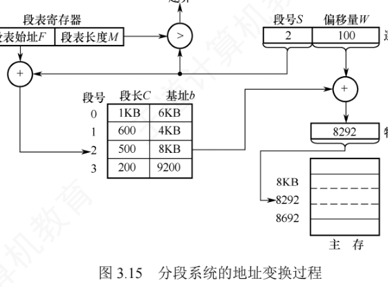
5. 分页和分段的对比
分页与分段都是离散分配，都要借助地址映射机构完成变换，但二者概念上有本质区别：
| 对比维度 | 分页 | 分段 |
|---|---|---|
| 出发点 / 目的 | 系统管理的需要，提高内存利用率 | 用户（程序）的需要：方便编程、信息共享与保护、动态增长、动态链接 |
| 信息的单位性质 | 页是物理单位，对用户透明 | 段是逻辑单位，由程序结构决定，对用户可见 |
| 大小 | 固定，由系统决定（2 的整数次幂） | 不固定，取决于程序的逻辑结构 |
| 地址空间维数 | 一维：一个线性地址即可定位 | 二维：须同时给出段号（段名）和段内偏移 |
| 碎片情况 | 无外部碎片，有页内碎片（内部碎片，平均约半页） | 无内部碎片（段按需分配），段间空隙会产生外部碎片 |
| 共享与保护 | 可以共享，但以页为单位，较繁琐 | 以段为单位共享和保护，更方便自然 |
6. 段的共享与保护
分页也能共享，但不如分段方便：共享代码占 N 个页框时，每个共享进程的页表都要建 N 个页表项指向这 N 个页框；分段则无论段多大，每个进程的段表只需一个段表项指向该共享段。
为实现段共享，系统可维护一张共享段表：每个共享段对应一个表项，记录段号、段长、内存起始地址、存在位、外存起始地址以及共享进程计数 count。某进程不再使用该段时 count 减 1，仅当 count = 0 时系统才回收该段的内存空间。注意：同一共享段在不同进程中可以有不同的段号，各进程用各自的段号访问同一个物理段。
共享的前提仍是代码不可修改：可重入代码（纯代码）放在只读段中，每个进程配私有的局部数据区存放可能变化的数据。分段系统的保护机制有两类：①地址越界保护——段号与段表长度比较、段内偏移与段长比较，越界即中断；②存取控制保护——利用段表项中的访问权限位（如只读、读写）阻止非法访问。
3.1.5 段页式存储管理
分页提高内存利用率，分段反映程序逻辑结构、便于共享保护。段页式存储管理把两者结合：进程的地址空间先按逻辑划分为段（每段有唯一段号），每段内部再划分为大小固定的页；内存仍划分为与页面等大的物理块，以物理块为单位分配内存。
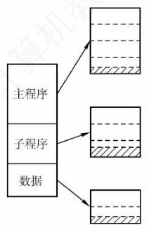
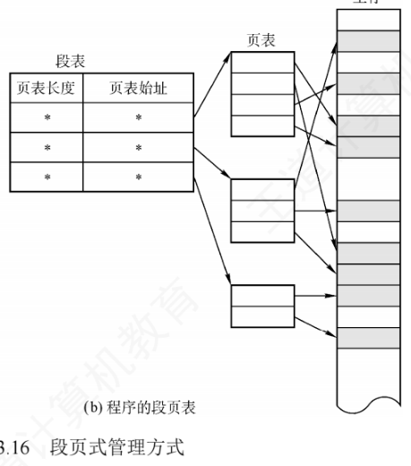
进程的逻辑地址由三部分组成：段号 S、页号 P、页内偏移量 W：
| 段号 S | 页号 P | 页内偏移量 W |
|---|---|---|
| （位数由段数决定） | （位数由每段页数决定） | （位数由页面大小决定） |
数据结构上：系统为每个进程建立一张段表，每个段对应一个段表项，记录该段的页表始址和页表长度（段号是段表的隐含索引）；每个段对应一张页表，页表项记录对应页的物理块号（页号是页表的隐含索引）。另设一个段表寄存器，存放当前进程段表的始址和段表长度，既用于定位段表，也用于段号越界检查。
段页式的地址变换过程 必考重点
- 根据逻辑地址中的段号 S，借段表寄存器定位段表（第 1 次访存），先做段号越界检查，再查出该段页表的起始地址；
- 用页号 P 访问该段对应的页表（第 2 次访存），取出目标页面的物理块号；
- 把物理块号与页内偏移量 W 拼接成物理地址，据此访问内存单元（第 3 次访存）。
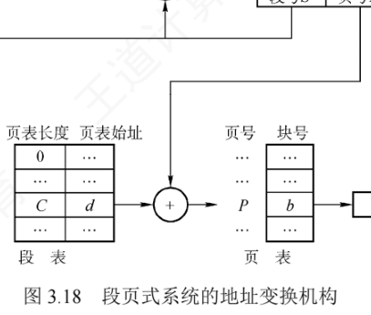
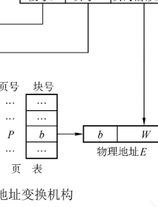
无快表时，每次取指令或数据需 3 次访存。为加速查找，可引入快表（TLB），其表项包含关键字（段号、页号）及对应的物理块号和保护信息——注意关键字是「段号 + 页号」的组合，这与纯分页系统只用页号作关键字不同。
对用户而言，程序仍按段组织，地址空间是二维的（与分段一致）；「页」的划分由系统自动完成，对用户不可见。
| 管理方式 | 逻辑地址组成 | 地址空间维数 | 无快表时取一次数据的访存次数 |
|---|---|---|---|
| 基本分页 | 页号 + 页内偏移 | 一维 | 2 次（查页表 + 访问数据） |
| 基本分段 | 段号 + 段内偏移 | 二维 | 2 次（查段表 + 访问数据） |
| 段页式 | 段号 + 页号 + 页内偏移 | 二维 | 3 次（查段表 + 查页表 + 访问数据） |
| N 级页表 | N 级页号 + 页内偏移 | 一维 | N + 1 次 |
3.1.6 本节小结
开头两个问题的答案
1）为什么要进行内存管理？ 单道程序系统中内存分配很简单——把全部内存（或固定分区）给当前程序即可。引入多道程序设计后，多个进程并发共享主存，若缺乏管理，各进程的地址空间可能重叠、相互覆盖，导致数据被意外修改、程序正确性被破坏。因此，为支持多道程序安全、高效地并发运行，必须进行内存管理。
2）多级页表解决了什么问题？又会带来什么问题？ 它解决了地址空间较大时单级页表过长、占用（连续）内存过多的问题：分级组织页表后，只需把当前使用的各级页表驻留内存，既减少内存占用，又免去对大块连续内存的要求。代价是性能开销：无快表时，一次地址变换要逐级访问多级页表，访存次数增多（N 级页表需 N+1 次访存），增加访存延迟。
学习建议
无论段式、页式还是段页式管理，抓住三个关键问题就抓住了核心：①逻辑地址结构（几部分、各占几位、几维）；②页（段）表项结构（存什么字段）；③寻址过程（怎么查表、怎么拼接、访存几次）。再次提醒：注意区分逻辑地址结构与表项结构——前者决定地址如何拆分，后者决定查表查到什么，两者不要混淆。